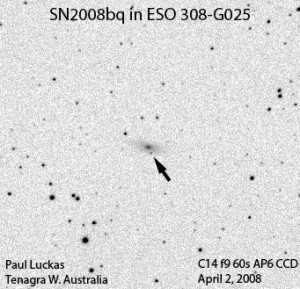

Tenagra Western Australia reaches double figures with its latest discovery.

Electronic Telegram No. 888 Central Bureau for Astronomical Telegrams INTERNATIONAL ASTRONOMICAL UNION M.S. 18, Smithsonian Astrophysical Observatory, Cambridge, MA 02138, U.S.A. IAUSUBS@CFA.HARVARD.EDU or FAX 617-495-7231 (subscriptions) CBAT@CFA.HARVARD.EDU (science) URL http://cfa-www.harvard.edu/iau/cbat.html
SUPERNOVA 2007as IN ESO 18-G18 P. Luckas, Perth, W. Australia; O. Trondal, Oslo, Norway; and M. Schwartz, Patagonia, AZ, report the discovery of an apparent supernova (mag 15.8) on unfiltered CCD frames taken with the 0.35-m telescope at Perth on Mar. 13.61 and 15.53 UT in the course of the Tenagra Observatory Supernova Search. SN 2007as is located at R.A. = 9h27m36s.01, Decl. = -80o10'39".2 (equinox 2000.0), which is 12".1 west and 8".8 north of the center of ESO 18-G18 (which itself has position end figures 40s.67, 48".0). Nothing was visible at the position of 2007as on an image taken by Luckas on Mar. 6.62 (limiting magnitude about 18.0) or on a Digitized Sky Survey image from 1996 Feb. 19 (limiting red mag 21.0). NOTE: These 'Central Bureau Electronic Telegrams' are sometimes superseded by text appearing later in the printed IAU Circulars. (C) Copyright 2007 CBAT 2007 March 15 (CBET 888) Daniel W. E. Green
Electronic Telegram No. 899
SUPERNOVAE 2007as AND 2007at N. Morrell and G. Folatelli, on behalf of the Carnegie Supernova Project, report spectroscopic observations (range 343-963 nm) of 2007as and 2007at obtained on Mar. 19.04 and 19.28 UT, respectively, with the 2.5-m du Pont telescope (+ Boller & Chivens spectrograph) at Las Campanas Observatory. The spectrum of 2007as (cf. CBET 888) shows this to be a type-Ia supernova at a few days before maximum light. Assuming the NED recession velocity of 5268 km/s for the host galaxy (Fairall and Woudt 2006, MNRAS 366, 267), the absorption minimum of the Si II 635.5-nm doublet indicates an expansion velocity of 13300 km/s, while that of the Ca II H-and-K doublet corresponds to 23300 km/s, which suggests a young age for the supernova.